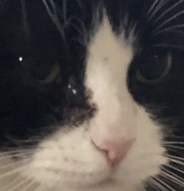

Hello World
We are Jessica Jorgensen and Faith Smith, Art and Design: Games and Playable Media majors!
With an aesthetic that consists of an odd blend of dragons, robots, and space, Jessica has a penchant for being willing to learn everything that she can. Interests include cats, digital art, tabletop roleplaying games, video games, and writing. Best known for being a night owl and subsequently taking naps at weird hours of the day.
Faith enjoys reading, video games, and art. Like a psychopath, she is currently reading six books at once. Her favorite out of the six is a dark fiction called Lapvona. A video game that she is enjoying right now is Assassins Creed: Odessey. Her favorite video game of all time is Wandersong, which follows the journey of a bard as he uses his voice to stop the world from ending. Art-wise, Faith is working on absolutely nothing, but enjoys doodling in a sketchbook from time to time.
This is a picture of a banana slug that Faith took. She is a certified Sammy Stalker!

Rosie Bear, Jessica's cat back home. A fluffy American Longhair tuxeto, she spends most of her days sleeping.
